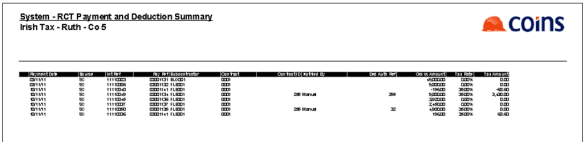
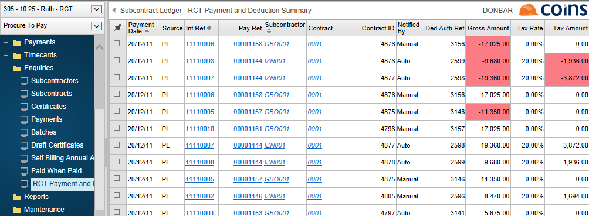
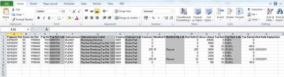

To
- Go to RCT Payment and Deduction Summary.
- Click
 to open the advanced filter.
to open the advanced filter. - Enter the range of payment dates to
- Click
 to apply the filter.
to apply the filter. - Check the details on screen.
Negative transactions are highlighted in red, because these are likely to require adjustment in the Return.
- To print a payment and deduction summary report:
- Click
 .
By default, all the relevant columns are selected.
.
By default, all the relevant columns are selected. - Click
 .
.

- To export the details to a spread sheet, click
 .
.

